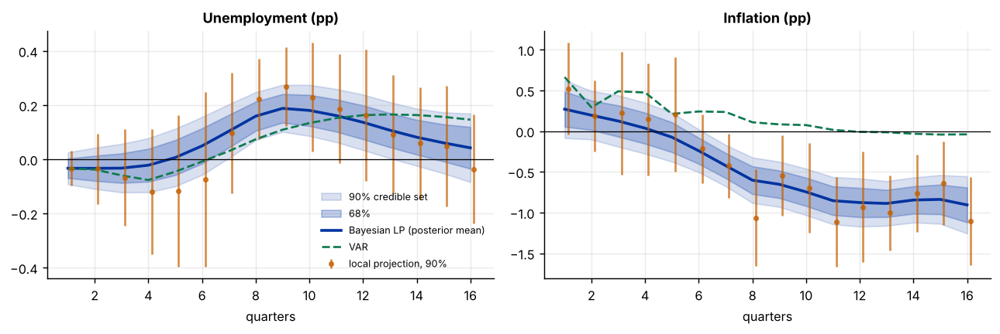

Step 1The question and the model
How does unemployment (and inflation) respond over the following four years to an unexpected rise in the policy rate? A local projection (Jordà 2005) answers it with one regression per horizon \(h=1,\dots,H\):
where \(r_t\) is the T-bill rate, \(w_t\) holds the contemporaneous inflation and unemployment (identifying the shock recursively, with the interest rate ordered last) and four lags of all three variables. \(\theta_h\) is the response of \(z\) at horizon \(h\) to a one-point policy shock. The regressions at different horizons are estimated separately, so the path \(\hat\theta_1,\dots,\hat\theta_H\) can zigzag, and the standard errors grow with \(h\).
The Bayesian version (Miranda-Agrippino and Ricco 2021; Barnichon and Brownlees 2019) adds the prior that the response moves smoothly with the horizon:
Together with the estimates \(\hat\theta_h\sim N(\theta_h,v_h)\), the posterior of the whole path is normal and exact, with no simulation needed. The tightness \(\tau\) can be chosen by maximising the marginal likelihood (empirical Bayes). With \(\tau\to\infty\) you get the plain local projections; with \(\tau\to0\) a constant response.
What the prior does and does not do
The smoothness prior reduces noise by borrowing strength across horizons. It does not fix bias from a misspecified shock, from omitted variables or from a weak instrument. A smoother path can look more convincing than the data justify, so always show the unsmoothed local projection next to the Bayesian one and report how the result depends on \(\tau\).
How to write it: the model
We estimate impulse responses of unemployment and inflation to a monetary policy shock with Bayesian local projections. For each horizon from one to sixteen quarters we regress the outcome on the Treasury bill rate, controlling for contemporaneous inflation and unemployment, which identifies the shock recursively with the interest rate ordered last, and for four lags of the three variables. We place a random-walk prior on the response across horizons, with the prior standard deviation chosen by maximising the marginal likelihood of the local-projection estimates (Miranda-Agrippino and Ricco 2021), and report posterior means with 68% and 90% credible sets. Standard errors of the single-horizon estimates are Newey-West with \(h+1\) lags.
Step 2Load the data and run the local projections
import warnings; warnings.filterwarnings("ignore")
import numpy as np, pandas as pd, statsmodels.api as sm
import matplotlib.pyplot as plt
d = pd.read_csv("us_macro.csv").dropna().reset_index(drop=True)
Y = d[["inflation", "unemp", "tbilrate"]].copy(); T = len(Y); H = 16
print(f"{T} quarters, {d.date.iloc[0]} to {d.date.iloc[-1]}")
print(Y.describe().loc[["mean", "std", "min", "max"]].round(2).to_string())
def lp(Y, P, H, resp, shock="tbilrate"):
"""local projection of `resp` at horizons 1..H on the shock, with contemporaneous controls and P lags; returns estimates and Newey-West s.e."""
Z = Y.values; cols = list(Y.columns); ir = cols.index(resp); isk = cols.index(shock)
others = [i for i in range(3) if i != isk]
th, se = [], []
for h in range(1, H + 1):
rows = np.arange(P, T - h)
y = Z[rows + h, ir]; x = Z[rows, isk]
Xc = np.column_stack([Z[rows][:, others]] + [Z[rows - l] for l in range(1, P + 1)] + [np.ones(len(rows))])
M = np.eye(len(rows)) - Xc @ np.linalg.pinv(Xc)
xr, yr = M @ x, M @ y; b = xr @ yr / (xr @ xr); u = yr - b * xr
g = xr * u; S = g @ g
for l in range(1, h + 2):
S += 2 * (1 - l / (h + 2)) * (g[l:] @ g[:-l])
th.append(b); se.append(np.sqrt(S) / (xr @ xr))
return np.array(th), np.array(se)
P = 4
LP = {r: lp(Y, P, H, r) for r in ["unemp", "inflation"]}
hs = np.arange(1, H + 1)
print("\nLocal-projection response of unemployment (percentage points per 1-point rise in the policy rate):")
print(pd.DataFrame({"estimate": LP["unemp"][0], "s.e.": LP["unemp"][1]}, index=hs).T.round(2).to_string())
print("Response of inflation:")
print(pd.DataFrame({"estimate": LP["inflation"][0], "s.e.": LP["inflation"][1]}, index=hs).T.round(2).to_string())202 quarters, 1959Q2 to 2009Q3
inflation unemp tbilrate
mean 3.98 5.89 5.32
std 3.25 1.46 2.80
min -8.79 3.40 0.12
max 14.62 10.70 15.33
Local-projection response of unemployment (percentage points per 1-point rise in the policy rate):
1 2 3 4 5 6 7 8 9 10 11 12 13 14 15 16
estimate -0.03 -0.03 -0.07 -0.12 -0.12 -0.07 0.10 0.22 0.27 0.23 0.19 0.16 0.09 0.06 0.05 -0.04
s.e. 0.04 0.08 0.11 0.14 0.17 0.20 0.14 0.09 0.09 0.12 0.12 0.15 0.13 0.13 0.14 0.12
Response of inflation:
1 2 3 4 5 6 7 8 9 10 11 12 13 14 15 16
estimate 0.52 0.19 0.22 0.15 0.20 -0.22 -0.43 -1.06 -0.55 -0.70 -1.12 -0.93 -1.00 -0.77 -0.64 -1.11
s.e. 0.34 0.27 0.46 0.42 0.42 0.26 0.24 0.36 0.30 0.34 0.33 0.41 0.28 0.29 0.31 0.33How to read it
The sample has 202 quarters. After a one-point policy shock, the unemployment response is slightly negative at first (−0.12 at horizon 4, within one standard error), turns positive from the seventh quarter and peaks at 0.27 points in quarter 9 (s.e. 0.09). The standard errors differ by a factor of five across horizons and the path is jagged (−0.07, 0.10, 0.22, 0.27, 0.23), which is typical of local projections. Inflation rises for the first year (a price puzzle: 0.52 in quarter 1, not significant) and then falls to about −1 point from quarter 8, but the individual estimates zigzag between −0.43 and −1.12.
Step 3A VAR benchmark
from statsmodels.tsa.api import VAR
vr = VAR(Y).fit(P)
irf = vr.irf(H).orth_irfs # Cholesky, ordering: inflation, unemployment, interest rate
scale = irf[0, 2, 2] # impact response of the interest rate to its own shock
var_resp = {"unemp": irf[1:, 1, 2] / scale, "inflation": irf[1:, 0, 2] / scale}
print(f"VAR({P}) with Cholesky identification; shock scaled so that the rate rises 1 point on impact")
print("Unemployment response, VAR:", np.round(var_resp["unemp"], 2))
print("Unemployment response, LP: ", np.round(LP["unemp"][0], 2))
print(f"Correlation of the two paths: {np.corrcoef(var_resp['unemp'], LP['unemp'][0])[0, 1]:.2f} (unemployment), {np.corrcoef(var_resp['inflation'], LP['inflation'][0])[0, 1]:.2f} (inflation)")
print(f"Largest LP s.e. / smallest LP s.e. for unemployment: {LP['unemp'][1].max() / LP['unemp'][1].min():.1f}")VAR(4) with Cholesky identification; shock scaled so that the rate rises 1 point on impact Unemployment response, VAR: [-0.03 -0.04 -0.06 -0.08 -0.05 -0.01 0.03 0.07 0.11 0.13 0.15 0.16 0.17 0.16 0.16 0.15] Unemployment response, LP: [-0.03 -0.03 -0.07 -0.12 -0.12 -0.07 0.1 0.22 0.27 0.23 0.19 0.16 0.09 0.06 0.05 -0.04] Correlation of the two paths: 0.69 (unemployment), 0.89 (inflation) Largest LP s.e. / smallest LP s.e. for unemployment: 5.0
How to read it
The VAR gives a smoother and smaller unemployment response, which reaches 0.17 after three years and does not fall back, against a local-projection peak of 0.27 in quarter 9. The paths are correlated at 0.69 for unemployment and 0.89 for inflation, so the two methods tell the same qualitative story: a short-run dip, a rise in unemployment at 2 to 3 years and lower inflation. The differences in size and timing are the usual ones: the VAR imposes the dynamics of its lag structure at all horizons, and the local projections do not.
Step 4The smoothness prior and its tightness
def prior_cov(tau, s0, H):
i = np.arange(H); return s0 ** 2 + tau ** 2 * np.minimum.outer(i, i) # covariance of a random walk started at theta_1 ~ N(0, s0^2)
def loglik(th, se, tau, s0):
C = prior_cov(tau, s0, len(th)) + np.diag(se ** 2)
s, ld = np.linalg.slogdet(C); return -.5 * (ld + th @ np.linalg.solve(C, th))
def posterior(th, se, tau, s0):
A = prior_cov(tau, s0, len(th)); V = np.diag(se ** 2)
K = A @ np.linalg.inv(A + V); return K @ th, (np.eye(len(th)) - K) @ A
s0 = 2.0
grid = np.logspace(-2.5, 0.5, 60)
post, tau_hat = {}, {}
for r in ["unemp", "inflation"]:
th, se = LP[r]
ll = np.array([loglik(th, se, t, s0) for t in grid]); tau_hat[r] = grid[ll.argmax()]
m, C = posterior(th, se, tau_hat[r], s0); post[r] = (m, C)
print(f"{r}: marginal-likelihood choice tau = {tau_hat[r]:.3f}; log marginal likelihood {ll.max():.1f} (flat-prior end of the grid: {ll[-1]:.1f}, constant-response end: {ll[0]:.1f})")
fig, ax = plt.subplots(1, 2, figsize=(10, 3.4))
for a, r, ttl in zip(ax, ["unemp", "inflation"], ["Unemployment (pp)", "Inflation (pp)"]):
th, se = LP[r]; m, C = post[r]; sd = np.sqrt(np.diag(C))
a.fill_between(hs, m - 1.645 * sd, m + 1.645 * sd, color="#0033a0", alpha=.15, label="90% credible set"); a.fill_between(hs, m - sd, m + sd, color="#0033a0", alpha=.25, label="68%")
a.plot(hs, m, color="#0033a0", lw=2, label="Bayesian LP (posterior mean)"); a.errorbar(hs + .12, th, yerr=1.645 * se, fmt="o", ms=3, color="#c46000", alpha=.7, label="local projection, 90%")
a.plot(hs, var_resp[r], color="#0f7a4f", lw=1.5, ls="--", label="VAR"); a.axhline(0, color="#000", lw=.7); a.set_title(ttl); a.set_xlabel("quarters")
ax[0].legend(frameon=False, fontsize=7); plt.tight_layout()unemp: marginal-likelihood choice tau = 0.059; log marginal likelihood 23.5 (flat-prior end of the grid: -18.0, constant-response end: 18.3) inflation: marginal-likelihood choice tau = 0.190; log marginal likelihood 7.0 (flat-prior end of the grid: -18.3, constant-response end: -5.1)

How to read it
The marginal likelihood prefers a smooth path (τ = 0.059 for unemployment, 0.19 for inflation) to both extremes: the log marginal likelihood is 23.5, against −18.0 with almost no smoothing and 18.3 with a constant response. Inflation needs a looser prior than unemployment because its local-projection path is more erratic. The posterior mean for unemployment follows the local projection (dip, then rise) but is smoother, peaks lower and has narrower bands; the 90% set at horizon 8 is [0.07, 0.25], against [0.07, 0.37] for the plain local projection. The posterior treats the horizon estimates as independent, so the bands understate uncertainty about the shape of the path.
Step 5Posterior statements
rng = np.random.default_rng(11)
for r, lab in [("unemp", "unemployment"), ("inflation", "inflation")]:
m, C = post[r]; dr = rng.multivariate_normal(m, C + 1e-12 * np.eye(H), 20000)
pk = np.abs(dr).argmax(1) + 1
print(f"\n{lab.capitalize()}:")
print(" posterior mean at horizons 4, 8, 12, 16:", {int(h): round(float(m[h - 1]), 2) for h in [4, 8, 12, 16]})
print(" probability that the response is positive at horizon 4, 8, 12, 16:", {int(h): round(float((dr[:, h - 1] > 0).mean()), 2) for h in [4, 8, 12, 16]})
print(" 90% credible set at horizon 8:", np.round(np.percentile(dr[:, 7], [5, 95]), 2), f"| LP 90% interval: {np.round(LP[r][0][7] + np.array([-1, 1]) * 1.645 * LP[r][1][7], 2)}")
print(f" posterior mode of the horizon of the largest absolute response: {np.bincount(pk).argmax()} quarters")
dr = rng.multivariate_normal(*post["unemp"], 20000)
print(f"\nProbability that the peak unemployment response exceeds 0.1 pp: {(dr.max(1) > .1).mean():.2f}; exceeds 0.3 pp: {(dr.max(1) > .3).mean():.2f}")
Unemployment:
posterior mean at horizons 4, 8, 12, 16: {4: -0.02, 8: 0.16, 12: 0.14, 16: 0.04}
probability that the response is positive at horizon 4, 8, 12, 16: {4: 0.36, 8: 1.0, 12: 0.99, 16: 0.71}
90% credible set at horizon 8: [0.07 0.25] | LP 90% interval: [0.07 0.37]
posterior mode of the horizon of the largest absolute response: 9 quarters
Inflation:
posterior mean at horizons 4, 8, 12, 16: {4: 0.04, 8: -0.6, 12: -0.88, 16: -0.91}
probability that the response is positive at horizon 4, 8, 12, 16: {4: 0.58, 8: 0.0, 12: 0.0, 16: 0.0}
90% credible set at horizon 8: [-0.88 -0.32] | LP 90% interval: [-1.66 -0.47]
posterior mode of the horizon of the largest absolute response: 16 quarters
Probability that the peak unemployment response exceeds 0.1 pp: 1.00; exceeds 0.3 pp: 0.04How to read it
The posterior probability that unemployment is higher than it would have been is 1.00 at horizon 8 and 0.99 at horizon 12, but only 0.36 at horizon 4 and 0.71 at horizon 16: the effect comes in the second and third year and then fades. The posterior mean peaks at 0.16 points, and the probability that the peak exceeds 0.1 is close to one while exceeding 0.3 has a probability of only 0.04. For inflation, the probability of a decline is 1.00 at horizons 8, 12 and 16 (posterior means of −0.60, −0.88 and −0.91), but it is not credibly negative in the first year (probability of an increase 0.58 at horizon 4).
Step 6Robustness: the tightness, the lag length and the sample
rows = []
th, se = LP["unemp"]
for lab, tau in [("very smooth (tau = 0.02)", .02), ("tight (tau = 0.05)", .05), ("chosen by marginal likelihood", tau_hat["unemp"]), ("loose (tau = 0.5)", .5), ("no smoothing (tau = 5)", 5.0)]:
m, C = posterior(th, se, tau, s0); sd = np.sqrt(np.diag(C))
rows.append((lab, m[7], sd[7], m[11], sd[11], np.abs(np.diff(m)).sum()))
print("Unemployment response by prior tightness (total variation = how much the path moves):")
print(pd.DataFrame(rows, columns=["prior", "mean h=8", "sd h=8", "mean h=12", "sd h=12", "total variation"]).round(3).to_string(index=False))
rows = []
for P_ in [2, 4, 6]:
th_, se_ = lp(Y, P_, H, "unemp"); ll = np.array([loglik(th_, se_, t, s0) for t in grid]); tt = grid[ll.argmax()]
m_, C_ = posterior(th_, se_, tt, s0); rows.append((P_, tt, m_[7], np.sqrt(C_[7, 7]), m_[11]))
print("\nBy lag length:"); print(pd.DataFrame(rows, columns=["lags", "tau chosen", "mean h=8", "sd h=8", "mean h=12"]).round(3).to_string(index=False))
half = T // 2
Yh = Y.iloc[:half].reset_index(drop=True); T_save = T; T = half
th_a, se_a = lp(Yh, 4, 12, "unemp"); T = T_save
print(f"\nFirst half of the sample only (to {d.date.iloc[half - 1]}): LP response at horizons 4, 8, 12: {np.round(th_a[[3, 7, 11]], 2)} (s.e. {np.round(se_a[[3, 7, 11]], 2)})")Unemployment response by prior tightness (total variation = how much the path moves):
prior mean h=8 sd h=8 mean h=12 sd h=12 total variation
very smooth (tau = 0.02) 0.088 0.034 0.097 0.039 0.129
tight (tau = 0.05) 0.149 0.050 0.132 0.058 0.327
chosen by marginal likelihood 0.159 0.054 0.136 0.062 0.367
loose (tau = 0.5) 0.219 0.088 0.160 0.137 0.761
no smoothing (tau = 5) 0.222 0.091 0.163 0.147 0.779
By lag length:
lags tau chosen mean h=8 sd h=8 mean h=12
2 0.047 0.136 0.043 0.138
4 0.059 0.159 0.054 0.136
6 0.066 0.170 0.062 0.167
First half of the sample only (to 1984Q2): LP response at horizons 4, 8, 12: [0.05 0.4 0.1 ] (s.e. [0.11 0.1 0.17])How to read it
The tightness matters for the size of the response and the width of the bands. With a very smooth prior (τ = 0.02) the horizon-8 response is 0.09, against 0.15 with τ = 0.05, 0.16 at the marginal-likelihood choice, and 0.22 with no smoothing. So the sign and timing of the response do not depend on the prior but the peak is between 0.09 and 0.22, and the posterior standard deviation shrinks from 0.091 to 0.034 as the prior tightens. Changing the lags from two to six moves the horizon-8 mean between 0.14 and 0.17. In the first half of the sample (to 1984) the local projection reaches 0.40 at horizon 8, so the effect appears larger in the earlier period, which is consistent with a change in the transmission of policy (see the TVP-VAR guide).
How to write it: results
A one-point unexpected rise in the policy rate lowers inflation and raises unemployment with a delay. The unemployment response is close to zero in the first year, turns positive in the second and peaks at about 0.16 percentage points around quarter 9 (posterior mean; 90% credible set 0.07 to 0.25 at quarter 8), after which it fades; the posterior probability that unemployment is above its baseline is 1.00 at quarter 8 and 0.99 at quarter 12. Inflation is little changed in the first year and falls by about 0.6 points after two years and 0.9 points after three. The Bayesian local projections have a smoothness prior with the tightness chosen by the marginal likelihood; they follow the unsmoothed local projections and the VAR (correlations of 0.69 for unemployment and 0.89 for inflation), but with narrower bands. The size of the peak depends on the prior (between 0.09 and 0.22 at quarter 8), and the response is larger in the first half of the sample.
Step 7What to report in the paper
| Item | What to show |
|---|---|
| Identification | the shock and the contemporaneous controls, stated plainly |
| Local projections | the unsmoothed estimates with HAC intervals, for transparency |
| Prior | the smoothness prior, how its tightness was chosen, the marginal likelihood |
| Posterior | posterior means with credible sets, and posterior probabilities where they answer the question |
| Benchmark | a VAR response on the same figure |
| Robustness | tightness, lag length and sub-samples |
Common mistakes
- Presenting the smooth path as the data. The smoothness is the prior's work. Show the raw local projections too.
- Ignoring that horizon-by-horizon estimates are correlated. The posterior here treats them as independent, which understates the uncertainty about the shape of the path. Say so, or use a joint covariance.
- Choosing the tightness by looking at the figure. Choose it by the marginal likelihood or a stated rule and show the sensitivity.
- Treating the recursive shock as truth. A price puzzle (inflation rising after a tightening) usually means that the shock is contaminated by information the central bank had. Add controls or use an external instrument.
- Reading credible sets as confidence intervals. They are probability statements conditional on the prior.
- Comparing responses with different scaling. Check that the LP and the VAR use the same shock size.